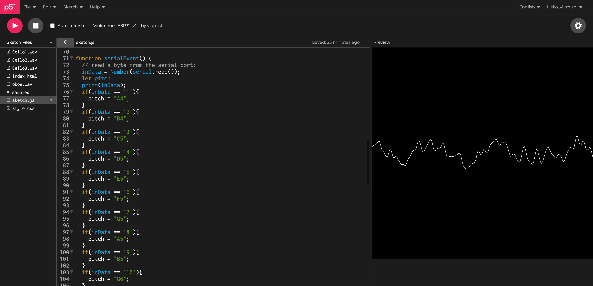

/MICROCHALLENGE_2
(27_march_2022)
You can check the whole project by tapping here: SYNE.
For this second challenge, I teamed up with Vikrant since we had some things we wanted to try out
and this was the perfect occasion to put them into practice. We are both interested in environmental
sensing, wearables design, collecting data in different ways and using tech to transform the reality
we know.
With all this in mind, we started thinking of devices we could create that could extend human
capabilities and senses, getting more information from what is around us but we cannot perceive
in a usual way. We also performed an intervention at the beginning of the week where we told
participants to ideate wearables taking into consideration some constraints written on cards. It
was nice to see the results from embodying ideation techniques and that gave us an amazing breath
of fresh air to start our project.
We finally got to these two concepts: a bracelet that transforms the colour into sound and a device that prevents going to a place with a lot of wifi networks. Considering the short amount of time we had, we decided to choose the bracelet since it seemed more straightforward than the other wearable.
The next step was to start prototyping and giving a shape to the wearable we had in mind. We made some iterations of the design until we finally got to the shape that fitted better our project. At this point, Vikrant and I split up in order to be more efficient and he took charge of the electronics and the processing while I designed, modelled and printed the structure and the boxes for the electronic components.

For the electronics part, Vikrant used Serial communication and P5 to transform the value the color sensor was giving into a specific tone. The process, even if it involved knowledge that we didn't have, was quite easy and we didn't have to debug a lot.

On the other hand, I used Grasshopper to model the main structure for the bracelet. I created a surface with the unfolded shape of it and then applied a Voronoi pattern all over. Then we printed it in TPU. For the other parts, I modelled all of them in SolidWorks precisely and printed them out in PLA and PETG. This is how the final design looked:
Being able to develop this project in just 4 days was really a challenge but at the same time made me learn cool stuff can be done in a really short time. It doesn't need to be a super complex project, but something meaningful and well made is more than enough. This was the first approach to sensors and I truly like how it came out, this gives me more motivation to keep on trying and experimenting with sensing and electronics. Also, I enjoyed being able to model in Grasshopper, I think is a different way of modelling that has unimaginable potential and I want to keep learning about it. Let's see what the next wearable is about!